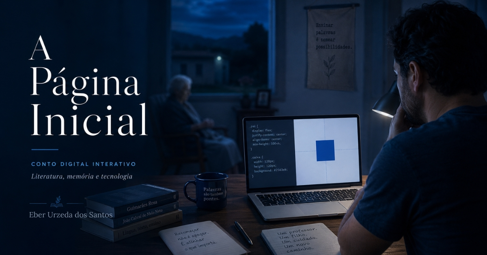

Uma experiência literária sobre memória, tecnologia e transição de carreira
Um conto sobre recomeço, linguagem, aprendizagem e a construção de uma nova página profissional.
A Página Inicial é um conto digital interativo sobre um professor de Língua Portuguesa e Literatura em transição para o desenvolvimento web.
O projeto une literatura, HTML, CSS, JavaScript e SQL experimental para criar uma leitura pensada para a tela e, ao mesmo tempo, funcionar como peça de portfólio.

Começar leituraCapítulos
Cada capítulo usa um termo do desenvolvimento web como metáfora para uma etapa da narrativa.
- Body — o corpo da página, da memória e da história.
- Header — aquilo que aparece primeiro, antes mesmo da leitura profunda.
- Main — o conteúdo central, onde a vida começa a ganhar estrutura.
- Link — as conexões entre pessoas, lugares e escolhas.
- Script — os comandos invisíveis que movem a história.
- Breakpoint — o ponto de ruptura em que tudo precisa se adaptar.
- Deploy — quando o projeto, enfim, vai para o mundo.